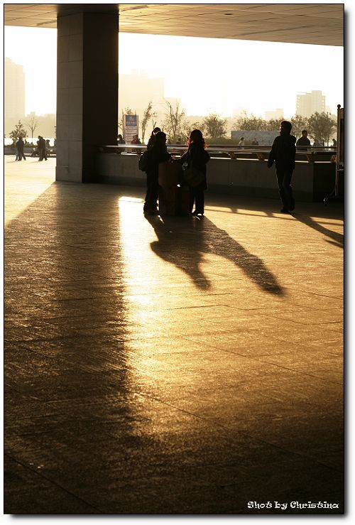

无限黑暗和光亮 @ Jan 08, 2007
他常说我情商低，并一直担心我分不清真伪，感情的...信息的...我已不是二八年华中幼稚女子，分不清楚一张严肃、认真布满真诚的表情下掩藏着的真正目的。当某些东西曾经被一层层剥开，某些人便经不起推敲，一切的虚假，然而可以虚假的理直气壮！生活对于某些人就是一场给他人观摩的表演。此时...淡然笑之...并遵循上帝旨意让其继续丑陋的表演...
周末阳光格外好，冬天的阳光似乎总是伴着寒风，江南的寒风又极为透骨的凉。我拍下这些光线中的心情，作为对过去这个温馨且沉浸的周末的纪念。



18 Responses to “无限黑暗和光亮”
2007-01-08
看起来很冷
2007-01-08
是光线的问题还是空气的问题，感觉天空灰蒙蒙的。
人人都有阴暗面，学会和不同的人工作相处也是一种生活技能，我们在国外必须和不同种族的人打交道，什什么中东人，印度人，黑人，白人，韩国人。。 好人和坏人，有些白人种族歧视很厉害，我们英文说的不地道，经常被人欺负，等中国强大了我们海外华人也可以牛X。
2007-01-08
北美国际汽车展作为世界五大顶级车展在日益衰落的车城底特律揭幕，打算周末去看看车展。除了汽车之外底特律没有什么好名声，底特律是CAPITAL OF MURDERS (凶杀之都)，DOWNTOWN 只有70 万人，每年被枪杀300多人，本来我拿到一个WALGREENS 的OFFER，工资比现在高很多，但是，WALGREENS 的药店在DETROIT DOWNTOWN，药店是打劫的主要对象，象MORPHINE，VICODIN 是吸毒者抢劫的目标，还必须工作两年才能换地方。钱和命相比，我觉得还是命重要。
2007-01-08
灰暗的天空，相比之下，香港近期的天空是如此的深蓝。
2007-01-08
过度自恋会令你与自然人群越来越有隔阂。亲爱的，你要学会放低些，轻松些，豁达些
2007-01-09
为了忘却的纪念
2007-01-09
有些留言让人无奈.....
公开自己的照片就算自恋吗？那么那些公共PHOTO网站上岂不都是自恋狂了？分享美好事物算自恋吗？女子爱美算自恋吗？还好，我心理比较正常，还没境界高到自以为是的生活：P
2007-01-09
照片感觉是有雾气。
有的时候你在听到别人说：我们美国人吃奶酪的时候, 我们英国人只吃牛肉的时候。我们中国人也要会说我们中国人吃火锅。如果你把自己与一个国家或是一个民族等同起来就没有人会说什么了（难以战胜了)。人们就会开始接受你（或是你们）这个概念。
对于个人也是这样的，在现在大千世界无奇不有，现在人要的就是个性！比如说张三喜欢吃点心，那就是我们认知张三的点。李四不吃香菜，OK，那就是李四的特点。所以不要太在意别人说什么。走好自己的路就行了！
如果大家都一样那还有什么意思？!
2007-01-09
check it out yo
http://www.pcauto.com.cn/newcar/abroad/honda/0701/422666.html
new accord coupe concept
2007-01-10
自恋蛮好的 自恋某种程度上是自信的表现
有人敢秀 有人不敢秀
不敢秀的人总是看了那些整天秀自己的人才会不爽
就像某人说我自恋 我总是笑笑。。。
今天看到某人开车等红灯因为摆弄头发 而忽略我的喇叭声。。。这种臭美不是一般人能学来的。。。
2007-01-10
照片是哪里拍的?
2007-01-10
在南京火车站和南师大。
2007-01-10
漂亮!
火车站彻底不认识了, 麦当劳那张是宁海路吗?
三年没回去了, 好想回去看看!
在这可以常常分享到家乡的照片,真温暖,谢谢你!
2007-01-11
女人嘛，上半生当水仙，下半生当茱萸。
2007-01-11
麦当劳那张是宁海路，这个变化应该不大的，主要是火车站完全变样了，不过里面的味儿没变，人多...嘿嘿...可以想象~~
2007-01-12
Mac的味道要归功于那些昂贵而且操作简单的机器
2007-01-13
不参加无聊的辩论了，一句话，照片越来越有味道了。thumb up!
2007-01-20
http://www.imagestation.com/picture/sraid223/pf9b7e0e97205c9365a3a0415f4c1a889/eb051093.jpg
Leave A Reply
存档只读，评论已关闭。